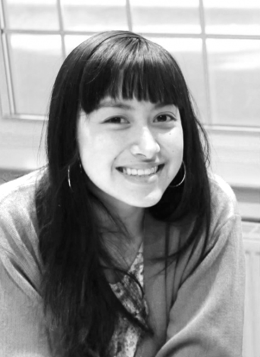
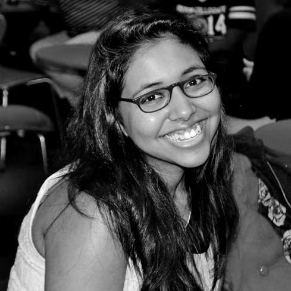
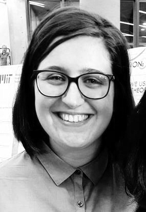

When in college I wondered, “Who are these middle-class folks who
are my friends? They were my friends but I knew that in one respect
I was not one of them. My class origins are fuzzy, perhaps not
entirely decipherable, and yet when I say, “My Dad was a painter, a
laborer, in a paper mill,” more than a trace is drawn to working-
class. I did also wonder, “What’s the point of college and of my
being a student?” Very much a First Gen kid, I was troubled by not
being able to answer such questions. I knew I liked to read and
write, and had the great good fortune of having a professor-become-
mentor who recognized that I could do these things. College became a
place for receiving unexpected, unexpected because unknown,
acknowledgment. To give new possibility to First Gen kids is very
much the point of my involvement in the First Gen Network. It’s
where I can let my hair down and give back what I’ve received.
Karen Shih Advisor
I am proud to be a first generation student who has become an
educator in higher education. It makes me very happy when first
generation students take pride and know that they are not alone.
My passion is to build our community of first generation faculty,
staff, students, and alumnae.

Elizabeth Cho Coordinator
I am currently a Cinema and Media Studies Major at Wellesley College
. I am involved with the college radio station, WZLY, am a member of
Mezcla and Fusion, and I absolutely love my job at Café Hoop. I am
originally from Chino, California. My mother immigrated to
California from Mexico and my father immigrated from Korea.
I am the first in my family to attend a four-year college and am
very proud to be part of the First Gen Network!

Oma Beharry Coordinator
Check back soon for Oma's bio!

Isabel Staccuneddu Coordinator
I am a class of 2017 double major in Economics and Women's and
Gender Studies. I am an APT in Stone-Davis, a
member of Café Hoop and CG President's Council, and an intern at WZLY.
I'm from Long Island, NY. My dad immigrated to NY from southern
Italy in the 80s. I'm the first person in my family to graduate from
high school, and I'm so proud to be at Wellesley!